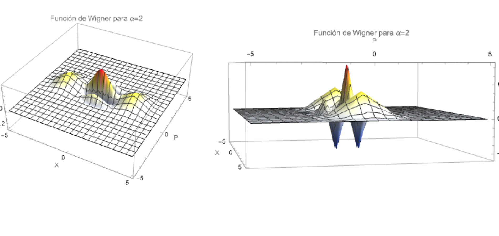

Estados del Campo Electromagnético
- Convención de un solo modo
- Estados de número de fotones
- Eigenestados del campo de radiación
- Verificación de la ecuación de eigenvalores
- Por qué un eigenestado de campo no es clásico
- Estados coherentes como vacío desplazado
- Estadística de fotones del estado coherente
- Distribución del campo eléctrico
- Sobre-completitud
- Expansión en estados coherentes
- Valores esperados del campo eléctrico
- Estados gato de Schrödinger
- Función de Wigner del estado gato
- Estadística de fotones del estado gato
1. Convención de un solo modo
Después de cuantizar el campo electromagnético, cada modo normal queda descrito como un oscilador armónico cuántico. En esta nota se considera un solo modo del campo, por lo que se omite el índice $\lambda$. Así se puede estudiar la estructura de los estados del campo sin cargar la notación con sumas sobre modos y polarizaciones.
Para un solo modo, el operador de campo eléctrico puede escribirse como
$$\hat{\mathbf E}(\mathbf r,t) = \mathcal E_0\mathbf u(\mathbf r) \frac{i}{\sqrt2} \left[ \hat a(0)e^{-i\omega t} - \hat a^\dagger(0)e^{i\omega t} \right].$$Si se introduce la cuadratura de momento del campo,
$$\hat\Pi(t)= \frac{i}{\sqrt2} \left[ \hat a^\dagger(0)e^{i\omega t} - \hat a(0)e^{-i\omega t} \right],$$entonces
$$\hat{\mathbf E}(\mathbf r,t)=-\mathcal E_0\mathbf u(\mathbf r)\hat\Pi(t).$$La constante $\mathcal E_0$ fija la escala del campo de un fotón y $\mathbf u(\mathbf r)$ contiene la forma espacial del modo. La estadística cuántica queda en los operadores $\hat a$ y $\hat a^\dagger$.
2. Estados de número de fotones
Los estados de número, o estados de Fock, son eigenestados del operador número:
$$\hat n=\hat a^\dagger\hat a,\qquad \hat n\ket n=n\ket n.$$Sus reglas de escalera son
$$\hat a\ket n=\sqrt n\,\ket{n-1}, \qquad \hat a^\dagger\ket n=\sqrt{n+1}\,\ket{n+1}.$$El valor esperado del campo eléctrico en $\ket n$ es
$$\begin{aligned} \langle\hat{\mathbf E}(\mathbf r,t)\rangle_n &= \mathcal E_0\mathbf u(\mathbf r)\frac{i}{\sqrt2} \left[ \bra n\hat a(0)\ket n e^{-i\omega t} - \bra n\hat a^\dagger(0)\ket n e^{i\omega t} \right]. \end{aligned}$$Al usar las reglas de escalera,
$$\bra n\hat a\ket n=\sqrt n\,\braket{n|n-1}=0, \qquad \bra n\hat a^\dagger\ket n=\sqrt{n+1}\,\braket{n|n+1}=0.$$Por tanto,
Esto no significa que el campo no tenga energía. Significa que un estado de número tiene energía bien definida, pero no fase bien definida. Por eso el campo promedio se anula.
La intensidad del campo está gobernada por $\hat{\mathbf E}^{\,2}$. Se calcula
$$\begin{aligned} \hat{\mathbf E}^{\,2} &= -\frac12\mathcal E_0^2\mathbf u^2(\mathbf r) \left(\hat a e^{-i\omega t}-\hat a^\dagger e^{i\omega t}\right)^2\\ &= -\frac12\mathcal E_0^2\mathbf u^2(\mathbf r) \left[ \hat a^2e^{-2i\omega t} - \hat a\hat a^\dagger - \hat a^\dagger\hat a + \hat a^{\dagger 2}e^{2i\omega t} \right]. \end{aligned}$$Los términos $\hat a^2$ y $\hat a^{\dagger2}$ conectan $\ket n$ con $\ket{n-2}$ y $\ket{n+2}$, que son ortogonales a $\ket n$. Por ello no contribuyen al valor esperado. Los términos restantes se evalúan con $\hat a\hat a^\dagger=\hat a^\dagger\hat a+1=\hat n+1$:
$$\begin{aligned} \langle\hat{\mathbf E}^{\,2}\rangle_n &= \frac12\mathcal E_0^2\mathbf u^2(\mathbf r) \bra n(\hat a\hat a^\dagger+\hat a^\dagger\hat a)\ket n\\ &= \frac12\mathcal E_0^2\mathbf u^2(\mathbf r)[(n+1)+n]. \end{aligned}$$La intensidad crece linealmente con el número de fotones. Para $n=0$,
$$\langle0|\hat{\mathbf E}^{\,2}|0\rangle = \frac12\mathcal E_0^2\mathbf u^2(\mathbf r).$$Aunque $\langle\hat{\mathbf E}\rangle_0=0$, el vacío presenta fluctuaciones. El campo efectivo del vacío por unidad de amplitud espacial es
Estas son las fluctuaciones cuánticas del vacío: no corresponden a una onda clásica, sino al ruido inevitable de la cuadratura del modo.
3. Eigenestados del campo de radiación
Sea $\theta=\omega t$. Se definen las cuadraturas adimensionales
$$\hat X=\frac{1}{\sqrt2}(\hat a+\hat a^\dagger), \qquad \hat\Pi=\frac{i}{\sqrt2}(\hat a^\dagger-\hat a),$$con $[\hat X,\hat\Pi]=i$. La cuadratura rotada es
$$\hat\varepsilon_\theta=\hat X\cos\theta+\hat\Pi\sin\theta.$$Sustituyendo $\hat X$ y $\hat\Pi$:
$$\begin{aligned} \hat\varepsilon_\theta &= \frac{1}{\sqrt2}(\hat a^\dagger+\hat a)\cos\theta + \frac{i}{\sqrt2}(\hat a^\dagger-\hat a)\sin\theta\\ &= \frac{1}{\sqrt2} \left[ \hat a^\dagger(\cos\theta+i\sin\theta) + \hat a(\cos\theta-i\sin\theta) \right]\\ &= \frac{1}{\sqrt2} \left(\hat a^\dagger e^{i\theta}+\hat a e^{-i\theta}\right). \end{aligned}$$Para $\theta=0$ se obtiene $\hat\varepsilon_0=\hat X$; para $\theta=\pi/2$, $\hat\varepsilon_{\pi/2}=\hat\Pi$. Los eigenestados se definen por
$$\hat\varepsilon_\theta\ket{\varepsilon_\theta} = \varepsilon_\theta\ket{\varepsilon_\theta}.$$Para $\theta=0$, los coeficientes en la base de número son las funciones propias del oscilador armónico:
$$\braket{n|\varepsilon_0} = \pi^{-1/4} \frac{H_n(\varepsilon_0)}{\sqrt{2^n n!}} e^{-\varepsilon_0^2/2}.$$Para una cuadratura rotada aparece una fase $e^{in\theta}$ en cada componente:
4. Verificación de la ecuación de eigenvalores
La acción de $\hat\varepsilon_\theta$ sobre $\ket n$ es
$$\hat\varepsilon_\theta\ket n = \frac{1}{\sqrt2} \left( \sqrt{n+1}e^{i\theta}\ket{n+1} + \sqrt n e^{-i\theta}\ket{n-1} \right).$$Aplicando esto a la expansión de $\ket{\varepsilon_\theta}$ y cambiando índices, ambas sumas se escriben en la base $\ket m$:
$$\begin{aligned} \hat\varepsilon_\theta\ket{\varepsilon_\theta} &= \pi^{-1/4}e^{-\varepsilon_\theta^2/2} \sum_{m=0}^{\infty} \frac{e^{im\theta}}{\sqrt{2^m m!}} \left[ \frac12H_{m+1}(\varepsilon_\theta) + mH_{m-1}(\varepsilon_\theta) \right]\ket m. \end{aligned}$$Usando la recurrencia de Hermite,
$$H_{m+1}(z)=2zH_m(z)-2mH_{m-1}(z),$$se tiene
$$\frac12H_{m+1}(\varepsilon_\theta) = \varepsilon_\theta H_m(\varepsilon_\theta) - mH_{m-1}(\varepsilon_\theta).$$Al sustituir, los términos $mH_{m-1}$ se cancelan:
$$\hat\varepsilon_\theta\ket{\varepsilon_\theta} = \varepsilon_\theta \pi^{-1/4}e^{-\varepsilon_\theta^2/2} \sum_{m=0}^{\infty} \frac{H_m(\varepsilon_\theta)e^{im\theta}}{\sqrt{2^m m!}}\ket m.$$5. Por qué un eigenestado de campo no es clásico
Un eigenestado $\ket{\varepsilon_\theta}$ tiene una cuadratura perfectamente definida. Sin embargo, como
$$[\hat X,\hat\Pi]=i,$$las incertidumbres satisfacen
$$\Delta X\,\Delta\Pi\ge\frac12.$$Al fijar una cuadratura se pierde la información de la conjugada. Como el campo eléctrico y el magnético de un modo son proporcionales a cuadraturas conjugadas, aparece una relación del tipo
$$\Delta\hat E\,\Delta\hat H\ge I,$$donde $I$ depende de las constantes de normalización del modo. Por eso un eigenestado exacto del campo de radiación no se comporta como una onda clásica: una onda clásica requiere amplitud y fase simultáneamente bien definidas.
6. Estados coherentes como vacío desplazado
Los estados coherentes proporcionan el compromiso cuántico más cercano al comportamiento clásico. Se definen mediante el operador de desplazamiento:
$$\hat D(\alpha)=e^{\alpha\hat a^\dagger-\alpha^*\hat a}, \qquad \ket\alpha=\hat D(\alpha)\ket0.$$Para obtener la expansión en estados de número se usa la fórmula de Baker-Campbell-Hausdorff:
$$e^{\hat A+\hat B}=e^{\hat A}e^{\hat B}e^{-[\hat A,\hat B]/2},$$cuando el conmutador conmuta con $\hat A$ y $\hat B$. Tomando $\hat A=\alpha\hat a^\dagger$ y $\hat B=-\alpha^*\hat a$,
$$[\hat A,\hat B]=|\alpha|^2.$$Por tanto,
$$\hat D(\alpha)= e^{-|\alpha|^2/2}e^{\alpha\hat a^\dagger}e^{-\alpha^*\hat a}.$$Como $\hat a\ket0=0$,
$$e^{-\alpha^*\hat a}\ket0= \left(1-\alpha^*\hat a+\frac{\alpha^{*2}}{2!}\hat a^2-\cdots\right)\ket0 = \ket0.$$Entonces
$$\begin{aligned} \ket\alpha &= e^{-|\alpha|^2/2}e^{\alpha\hat a^\dagger}\ket0\\ &= e^{-|\alpha|^2/2} \sum_{n=0}^{\infty}\frac{\alpha^n}{n!}\hat a^{\dagger n}\ket0. \end{aligned}$$Usando $\hat a^{\dagger n}\ket0=\sqrt{n!}\ket n$,
7. Estadística de fotones del estado coherente
La probabilidad de encontrar $n$ fotones en $\ket\alpha$ es
$$W_n=|\braket{n|\alpha}|^2= e^{-|\alpha|^2}\frac{|\alpha|^{2n}}{n!}.$$Esta es una distribución de Poisson. El número promedio de fotones es
$$\begin{aligned} \langle\hat n\rangle &= \sum_{n=0}^{\infty}nW_n\\ &= |\alpha|^2 \sum_{m=0}^{\infty}\frac{|\alpha|^{2m}}{m!}e^{-|\alpha|^2}\\ &= |\alpha|^2. \end{aligned}$$Para el segundo momento,
$$\begin{aligned} \langle\hat n^2\rangle &= \sum_{n=0}^{\infty} n^2\frac{|\alpha|^{2n}}{n!}e^{-|\alpha|^2}\\ &= |\alpha|^4 \sum_{m=0}^{\infty}\frac{|\alpha|^{2m}}{m!}e^{-|\alpha|^2} + |\alpha|^2 \sum_{m=0}^{\infty}\frac{|\alpha|^{2m}}{m!}e^{-|\alpha|^2}\\ &= |\alpha|^4+|\alpha|^2. \end{aligned}$$La desviación estándar es $\sigma=\sqrt{\langle\hat n\rangle}$. El ancho absoluto crece con la intensidad, pero el ancho relativo decrece:
$$\frac{\sigma}{\langle\hat n\rangle} = \frac{1}{\sqrt{\langle\hat n\rangle}} \xrightarrow{\langle\hat n\rangle\to\infty}0.$$También puede verse directamente por operadores:
$$\langle\hat n\rangle = \bra\alpha\hat a^\dagger\hat a\ket\alpha=|\alpha|^2,$$ $$\begin{aligned} \langle\hat n^2\rangle &= \bra\alpha\hat a^\dagger\hat a\hat a^\dagger\hat a\ket\alpha\\ &= \bra\alpha\hat a^\dagger(\hat a^\dagger\hat a+1)\hat a\ket\alpha\\ &= |\alpha|^4+|\alpha|^2. \end{aligned}$$El término adicional $|\alpha|^2$ aparece por el conmutador $[\hat a,\hat a^\dagger]=1$.
8. Distribución del campo eléctrico en un estado coherente
La probabilidad de medir el valor $\varepsilon_\theta$ de la cuadratura del campo cuando el modo está en $\ket\beta$ es
$$W_{\ket\beta}(\varepsilon_\theta) = |\braket{\varepsilon_\theta|\beta}|^2.$$Usando la expansión de $\bra{\varepsilon_\theta}$ y la de $\ket\beta$,
$$\begin{aligned} \braket{\varepsilon_\theta|\beta} &= \pi^{-1/4}e^{-\varepsilon_\theta^2/2}e^{-|\beta|^2/2} \sum_{n=0}^{\infty} \frac{H_n(\varepsilon_\theta)}{n!} \left(\frac{\beta e^{-i\theta}}{\sqrt2}\right)^n. \end{aligned}$$La función generatriz
$$\sum_{n=0}^{\infty}\frac{z^n}{n!}H_n(\xi)=e^{-z^2+2\xi z}$$con $z=\beta e^{-i\theta}/\sqrt2$ produce
$$\braket{\varepsilon_\theta|\beta} = \pi^{-1/4} \exp\left[ -\frac12\varepsilon_\theta^2 -\frac12(\beta e^{-i\theta})^2 +\sqrt2\,\varepsilon_\theta\beta e^{-i\theta} -\frac12|\beta|^2 \right].$$Para $\theta=0$ y $\beta$ real,
$$\braket{x|\beta} = \pi^{-1/4} e^{\frac12(\beta^2-|\beta|^2)} e^{-\frac12(x-\sqrt2\beta)^2}.$$Si $\beta$ es real, el prefactor se cancela; si $\beta$ es complejo, la fase asociada es esencial en superposiciones coherentes. Tomando el módulo cuadrado de la amplitud general se obtiene
Es una gaussiana centrada en
$$\varepsilon_\theta^{(0)} = \frac{1}{\sqrt2}\left(\beta e^{-i\theta}+\beta^*e^{i\theta}\right) = \sqrt2\,\operatorname{Re}(\beta e^{-i\theta}).$$El estado coherente desplaza el centro de la distribución del vacío sin cambiar su anchura.
9. Sobre-completitud de los estados coherentes
Los estados coherentes forman un conjunto completo pero no ortogonal. La resolución de la identidad es
Escribiendo $\alpha=|\alpha|e^{i\theta}$, el elemento de área es
$$d^2\alpha=d(\operatorname{Re}\alpha)d(\operatorname{Im}\alpha) = |\alpha|\,d|\alpha|\,d\theta.$$Sustituyendo la expansión en estados de número:
$$\begin{aligned} \frac1\pi\int d^2\alpha\,\ket\alpha\bra\alpha &= \sum_{n,m=0}^{\infty} \frac{\ket n\bra m}{\sqrt{n!m!}} \int_0^\infty |\alpha|^{n+m+1}e^{-|\alpha|^2}d|\alpha|\\ &\hspace{1.8cm}\times \frac1\pi\int_0^{2\pi}e^{i(n-m)\theta}d\theta. \end{aligned}$$La integral angular da $2\pi\delta_{nm}$, de modo que sólo sobreviven los términos diagonales. Con $u=|\alpha|^2$,
$$2\int_0^\infty|\alpha|^{2n+1}e^{-|\alpha|^2}d|\alpha| = \int_0^\infty u^ne^{-u}du = \Gamma(n+1)=n!.$$Por tanto,
$$\frac1\pi\int d^2\alpha\,\ket\alpha\bra\alpha = \sum_{n=0}^{\infty}\ket n\bra n = \hat I.$$La no ortogonalidad se ve en el traslape:
El traslape entre dos estados coherentes es una gaussiana en la separación entre sus puntos del espacio fase.
10. Expansión en estados coherentes
Por sobre-completitud, un estado coherente puede expandirse en otros estados coherentes:
$$\begin{aligned} \ket\alpha &= \frac1\pi\int d^2\beta\,\ket\beta\braket{\beta|\alpha}\\ &= \frac1\pi\int d^2\beta\, \exp\left[-\frac12(|\alpha|^2+|\beta|^2)+\beta^*\alpha\right]\ket\beta. \end{aligned}$$El peso se separa como
$$\exp\left[-\frac12|\alpha-\beta|^2\right]e^{i\Phi(\beta;\alpha)}, \qquad \Phi(\beta;\alpha)=\operatorname{Im}(\alpha\beta^*).$$La parte gaussiana mide la separación y la fase contiene el área orientada asociada al triángulo formado por el origen y los puntos complejos $\alpha$ y $\beta$.
También un estado de número puede escribirse usando estados coherentes de módulo fijo. Para
$$\ket{|\beta|e^{i\theta}} = e^{-|\beta|^2/2} \sum_{m=0}^{\infty} \frac{|\beta|^m e^{im\theta}}{\sqrt{m!}}\ket m,$$multiplicando por $e^{-in\theta}$ e integrando sobre $\theta$:
$$\begin{aligned} \frac1{2\pi}\int_0^{2\pi} e^{-in\theta}\ket{|\beta|e^{i\theta}}d\theta &= e^{-|\beta|^2/2} \frac{|\beta|^n}{\sqrt{n!}}\ket n. \end{aligned}$$Es decir, un estado de número se obtiene como una superposición continua de estados coherentes distribuidos sobre un círculo de radio fijo.
11. Valores esperados del campo eléctrico en estados coherentes
Para un solo modo,
$$\hat{\mathbf E} = \mathcal E_0\mathbf u(\mathbf r)\frac{i}{\sqrt2} [\hat a(t)-\hat a^\dagger(t)].$$En un estado coherente $\hat a(t)\ket\alpha=\alpha(t)\ket\alpha$, con $\alpha(t)=\alpha(0)e^{-i\omega t}$. Por tanto,
$$\begin{aligned} \langle\hat{\mathbf E}\rangle_\alpha &= \mathcal E_0\mathbf u(\mathbf r)\frac{i}{\sqrt2} [\alpha(t)-\alpha^*(t)]\\ &= -\sqrt2\,\mathcal E_0\mathbf u(\mathbf r)\operatorname{Im}[\alpha(t)]. \end{aligned}$$Esta es la forma de un campo eléctrico clásico monocromático, con amplitud proporcional a $\sqrt2\,\mathcal E_0|\alpha|$.
Para el segundo momento,
$$\begin{aligned} \langle\hat{\mathbf E}^{\,2}\rangle_\alpha &= -\frac12\mathcal E_0^2\mathbf u^2(\mathbf r) \bra\alpha(\hat a-\hat a^\dagger)^2\ket\alpha\\ &= -\frac12\mathcal E_0^2\mathbf u^2(\mathbf r) [\alpha^2+\alpha^{*2}-2|\alpha|^2-1]\\ &= -\frac12\mathcal E_0^2\mathbf u^2(\mathbf r)[(\alpha-\alpha^*)^2-1]. \end{aligned}$$Como
$$\langle\hat{\mathbf E}\rangle_\alpha^2 = -\frac12\mathcal E_0^2\mathbf u^2(\mathbf r)(\alpha-\alpha^*)^2,$$la varianza es
Las fluctuaciones del campo eléctrico en un estado coherente son independientes de $\alpha$ e iguales a las del vacío. En cambio, en un estado de número son proporcionales a $n+1/2$. Por eso los estados coherentes son los estados del campo más cercanos al caso clásico.
12. Estados gato de Schrödinger
Un estado gato de Schrödinger de un solo modo es una superposición de dos estados coherentes macroscópicamente distinguibles:
$$\ket\psi = N\frac{1}{\sqrt2} \left( \ket{\alpha e^{i\varphi}} + \ket{\alpha e^{-i\varphi}} \right),$$donde $\alpha$ se toma real y positiva. En el plano de cuadraturas, ambos estados tienen el mismo módulo, pero fases opuestas:
$$\langle x\rangle=\sqrt2\,\alpha\cos\varphi, \qquad \langle p\rangle=\pm\sqrt2\,\alpha\sin\varphi.$$La constante $N$ no es uno porque los estados coherentes no son ortogonales. Usando el traslape coherente,
$$\begin{aligned} 1 &= \braket{\psi|\psi}\\ &= N^2 \left[ 1+ \operatorname{Re} \left( e^{-\alpha^2+\alpha^2e^{-2i\varphi}} \right) \right]. \end{aligned}$$Además,
$$\operatorname{Re} \left( e^{-\alpha^2+\alpha^2e^{-2i\varphi}} \right) = e^{-2\alpha^2\sin^2\varphi} \cos(\alpha^2\sin2\varphi).$$Definiendo $P_\varphi=|\sqrt2\,\alpha\sin\varphi|$,
13. Función de Wigner del estado gato
La función de Wigner de un estado puro es
$$W_\psi(x,p) = \frac1\pi \int_{-\infty}^{\infty} dy\,e^{2ipy}\psi^*(x+y)\psi(x-y).$$Si
$$\psi(x)=\frac{N}{\sqrt2}[\psi_+(x)+\psi_-(x)],$$entonces aparecen cuatro términos:
$$W_\psi = \frac{N^2}{2} (W_{++}+W_{+-}+W_{-+}+W_{--}).$$Los términos diagonales corresponden a las dos gaussianas coherentes; los cruzados producen la interferencia. Para calcularlos se usa
$$\braket{x|\alpha} = \pi^{-1/4} \exp\left[ -\frac12(x-x_0)^2+ixp_0-\frac{i}{2}x_0p_0 \right],$$con $x_0=\sqrt2\,\alpha\cos\varphi$ y $p_0=\sqrt2\,\alpha\sin\varphi$. Un término cruzado queda
$$\begin{aligned} W_{+-} &= \int_{-\infty}^{\infty}dy\,e^{2ipy}\psi_+(x+y)\psi_-^*(x-y)\\ &= \pi^{-1/2} \int_{-\infty}^{\infty}dy\, \exp[ 2ipy-(x-x_0)^2-y^2+2ip_0x-i\alpha^2\sin2\varphi]\\ &= e^{-(x-x_0)^2-p^2} e^{i(-\alpha^2\sin2\varphi+2p_0x)}. \end{aligned}$$El otro término cruzado es el complejo conjugado, $W_{-+}=W_{+-}^*$. Al sumarlos aparece un coseno. Los términos diagonales son
$$W_{++}=e^{-(x-x_0)^2-(p+p_0)^2}, \qquad W_{--}=e^{-(x-x_0)^2-(p-p_0)^2}.$$En términos de $\alpha$ y $\varphi$, el argumento del coseno es
$$2p_0x-\alpha^2\sin2\varphi = 2\sqrt2\,\alpha\sin\varphi \left( x-\frac{\alpha}{\sqrt2}\cos\varphi \right).$$La función puede escribirse como
$$W_\psi(x,p)= \frac{N^2}{2} \left( W_{\ket{\alpha e^{i\varphi}}} + W_{\ket{\alpha e^{-i\varphi}}} + W_{\mathrm{int}} \right),$$donde
$$W_{\ket{\alpha e^{\pm i\varphi}}} = \frac1\pi e^{-(x-\sqrt2\alpha\cos\varphi)^2 -(p\pm\sqrt2\alpha\sin\varphi)^2},$$ $$W_{\mathrm{int}} = \frac{2}{\pi} e^{-(x-\sqrt2\alpha\cos\varphi)^2-p^2} \cos\left[ 2\sqrt2\,\alpha\sin\varphi \left( x-\frac{\alpha}{\sqrt2}\cos\varphi \right) \right].$$Si no existieran los términos cruzados, el resultado sería una mezcla estadística de dos gaussianas. El término de interferencia aparece por la bilinealidad de la función de Wigner y produce franjas que pueden hacerla negativa.

14. Estadística de fotones del estado gato
Se estudia ahora la probabilidad $W_m$ de hallar $m$ fotones en el estado gato. A diferencia de la distribución de Poisson de un solo estado coherente, la superposición introduce interferencia dependiente de la diferencia de fase $2\varphi$:
$$\begin{aligned} W_m(\psi) &= |\braket{m|\psi}|^2\\ &= \frac{N^2}{2} \left| \braket{m|\alpha e^{i\varphi}} + \braket{m|\alpha e^{-i\varphi}} \right|^2. \end{aligned}$$Como
$$\braket{m|\beta}=\frac{\beta^m}{\sqrt{m!}}e^{-|\beta|^2/2},$$entonces
$$\begin{aligned} W_m(\psi) &= \frac{N^2}{2} \left| \frac{\alpha^m}{\sqrt{m!}}e^{-\alpha^2/2}e^{im\varphi} + \frac{\alpha^m}{\sqrt{m!}}e^{-\alpha^2/2}e^{-im\varphi} \right|^2\\ &= 2N^2 \frac{\alpha^{2m}}{m!}e^{-\alpha^2}\cos^2(m\varphi). \end{aligned}$$Hasta normalización, aparece la distribución de Poisson de un estado coherente modulada por $\cos^2(m\varphi)$. Esta modulación puede estrechar o ensanchar la distribución respecto a una Poisson ordinaria.
Para caracterizar el efecto se usa la varianza normalizada:
$$\sigma^2 = \frac{\langle m^2\rangle}{\langle m\rangle} - \langle m\rangle, \qquad \langle m\rangle=\sum_{m=0}^{\infty}mW_m, \qquad \langle m^2\rangle=\sum_{m=0}^{\infty}m^2W_m.$$Con esta convención, $\sigma<1$ indica estadística sub-poissoniana, $\sigma>1$ indica estadística súper-poissoniana y $\sigma=1$ corresponde a Poisson. La interferencia entre las dos componentes coherentes no sólo se observa en Wigner; también modifica la estadística discreta de fotones.